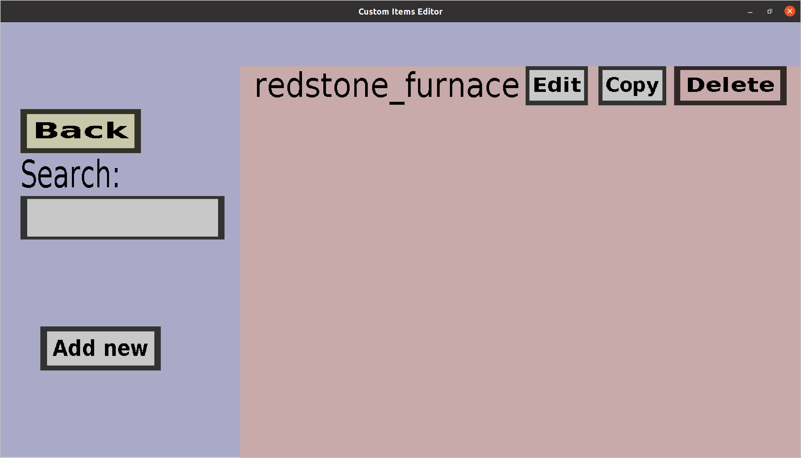

The fuel registry overview shows all custom fuel registries you have made so far (or nothing if
you haven't made any yet). From this menu, you can create new fuel registries, editing existing
ones, copy existing ones and delete them. Custom fuel registries are used by fuel slots of custom
containers to determine which items should be considered as fuel, and which items shouldn't.
They are managed separately from custom containers to make it easy to share them among multiple
custom containers. If you have a single fuel registry called redstone_furnace, it should
look like this:

-
The 'Back' button will take you back to the container portal
-
The text edit field below 'Search:' can be used to filter on the names of fuel registries.
Only the fuel registries whose name contains the text in that field will be shown.
-
The 'Create new' button will take you to the fuel registry edit menu,
where you can create a new fuel registry.
-
The 'Edit' button will take you to the fuel registry edit menu, where
you can edit the corresponding fuel registry (in this case my 'redstone_furnace' registry).
-
The 'Copy' button will also take you to the fuel registry edit menu.
It will look like you are editing the corresponding fuel registry, but clicking 'Create' will
create a new fuel registry instead. Note that you will need to change the name because
no two fuel registries can have the same name.
-
The 'Delete' button will remove the corresponding fuel registry. However, this will fail if
there is currently a fuel slot using the corresponding fuel registry.